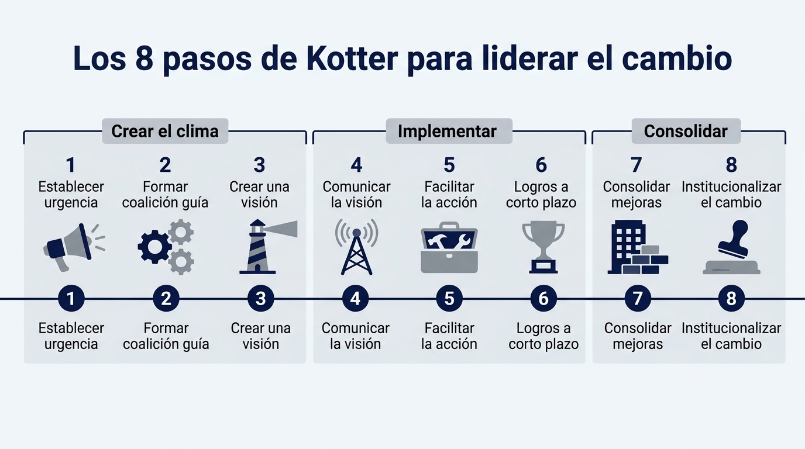
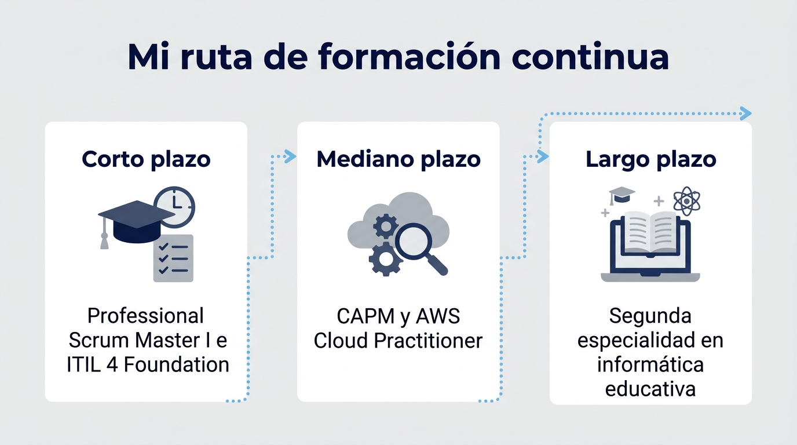

3. Desarrollo del contenido
En esta página desarrollo el tema central en distintos formatos: texto, tablas, imágenes y video. Explico cómo se gestiona el cambio en una transformación digital, qué marco ágil ayuda a coordinar equipos técnicos y comerciales, y cuál es mi plan de formación continua.
3.1 Transformación digital: un cambio de personas, no solo de herramientas
La transformación digital implica cambiar procesos, cultura y forma de decidir, con la tecnología como medio. Muñoz Garro (2024) explica que la resistencia al cambio es uno de los principales obstáculos y que los líderes deben apoyarse en habilidades digitales y también en inteligencia emocional para superarla. Además, advierte que enfocarse solo en la tecnología puede llevar a una gestión deshumanizada.
Ese artículo se apoya en tres marcos teóricos que me sirven como base:
| Marco | Idea central | Cómo lo aplico |
|---|---|---|
| Teoría del cambio de Lewin (citado en Muñoz Garro, 2024) | El cambio tiene tres fases: descongelamiento, cambio y recongelamiento. | Antes de implementar un sistema, preparo al cliente; luego capacito; al final verifico que el nuevo hábito se mantenga. |
| Adopción de innovaciones de Rogers (citado en Muñoz Garro, 2024) | Explica cómo se propagan las nuevas tecnologías dentro de un grupo. | Identifico primero a los usuarios más receptivos para que impulsen al resto. |
| Liderazgo transformacional de Bass (citado en Muñoz Garro, 2024) | El líder motiva al equipo mediante una visión compartida. | En trabajos grupales explico el propósito de cada tarea, no solo quién la hace. |
3.2 Gestión del cambio: el modelo de 8 pasos de Kotter
Kotter (1996) propuso ocho pasos para liderar cambios en una organización. Los agrupo en tres etapas para entenderlos mejor:
| Etapa | Paso | Ejemplo en un proyecto tecnológico |
|---|---|---|
| Crear el clima | 1. Establecer un sentido de urgencia | Mostrar a la gerencia las pérdidas por procesos manuales. |
| 2. Formar una coalición guía | Reunir a una persona técnica y una comercial como equipo líder. | |
| 3. Crear una visión | "Atender pedidos en la mitad del tiempo". | |
| Implementar | 4. Comunicar la visión | Presentaciones breves y claras a cada área. |
| 5. Facilitar la acción de otros | Eliminar barreras como permisos o falta de capacitación. | |
| 6. Planificar logros a corto plazo | Entregar primero un módulo piloto funcional. | |
| Consolidar | 7. Consolidar las mejoras | Usar los resultados del piloto para extender el cambio. |
| 8. Institucionalizar los nuevos enfoques | Integrar el nuevo proceso en manuales y rutinas. |

Video de apoyo
Virgolini, D. (22 de mayo 2025). Gestión del Cambio | 8 Pasos de Kotter [Video]. YouTube. https://www.youtube.com/watch?v=gbOn4Aw0yH4
3.3 Scrum: un marco para unir equipos técnicos y comerciales
Scrum es un marco ligero que ayuda a las personas y los equipos a generar valor mediante soluciones adaptativas a problemas complejos (Schwaber y Sutherland, 2020). Su valor para mi tema está en que obliga a conversar con frecuencia con quien necesita el producto.
| Elemento | Qué es | Por qué conecta técnica y negocio |
|---|---|---|
| Product Owner | Responsable de maximizar el valor del producto. | Traduce las necesidades del negocio en prioridades. |
| Scrum Master | Responsable de que el equipo aplique Scrum bien. | Facilita la comunicación y elimina obstáculos. |
| Developers | Quienes construyen el incremento del producto. | Aportan la viabilidad técnica. |
| Sprint Review | Reunión donde se revisa lo logrado con los interesados. | El cliente ve avances reales y da retroalimentación. |
3.4 Traducir requerimientos: del lenguaje técnico al lenguaje de negocio
Un líder de proyectos tecnológicos debe explicar el mismo asunto de dos maneras. Estos ejemplos ilustran el ejercicio de traducción que practico en mi empresa y en mis trabajos académicos:
| Lenguaje técnico | Lenguaje de negocio |
|---|---|
| Hacer copias de seguridad automáticas | Evitar perder información de clientes y retomar el trabajo rápido ante una falla. |
| Migrar un sistema a la nube | Reducir gastos de mantenimiento y acceder a la información desde cualquier lugar. |
| Implementar control de accesos | Proteger datos sensibles y cumplir políticas internas. |
| Actualizar equipos y software | Disminuir interrupciones y mejorar la productividad del personal. |
3.5 Formación continua
Mi plan combina certificaciones de gestión y de tecnología, ordenadas según mis metas a corto, mediano y largo plazo. Antes de inscribirme verificaré en cada sitio oficial los requisitos, costos y vigencia actuales.
| Plazo | Formación | Entidad | Aporte a mi perfil |
|---|---|---|---|
| Corto | Professional Scrum Master I (PSM I) | Scrum.org | Gestión ágil de equipos y proyectos. |
| Corto | ITIL 4 Foundation | PeopleCert (Axelos) | Buenas prácticas en servicios de TI, útil para mi empresa de soporte técnico. |
| Mediano | Certified Associate in Project Management (CAPM) | PMI | Fundamentos de dirección de proyectos. |
| Mediano | AWS Certified Cloud Practitioner | Amazon Web Services | Fundamentos de computación en la nube. |
| Largo | Segunda especialidad en informática educativa | Universidad por definir | Unir tecnología y aprendizaje como línea profesional. |

Conclusión
Liderar un proyecto tecnológico exige dominar la técnica y, al mismo tiempo, comprender a las personas. Los modelos de Lewin y Kotter, el marco Scrum y mi plan de certificaciones me dan una ruta concreta para convertirme en ese puente entre la técnica y el negocio.
Referencias de esta página
Kotter, J. P. (1996). Leading change. Harvard Business School Press.
Muñoz Garro, E. (2024). La influencia de la tecnología en el liderazgo global: amplificando habilidades y capacidades en un entorno empresarial digitalizado. e-Ciencias de la Información, 14(2). https://doi.org/10.15517/eci.v14i2.55613
Schwaber, K., y Sutherland, J. (2020). The Scrum Guide. https://scrumguides.org/docs/scrumguide/v2020/2020-Scrum-Guide-US.pdf
Virgolini, D. (22 de mayo 2025). Gestión del Cambio | 8 Pasos de Kotter [Video]. YouTube. https://www.youtube.com/watch?v=gbOn4Aw0yH4